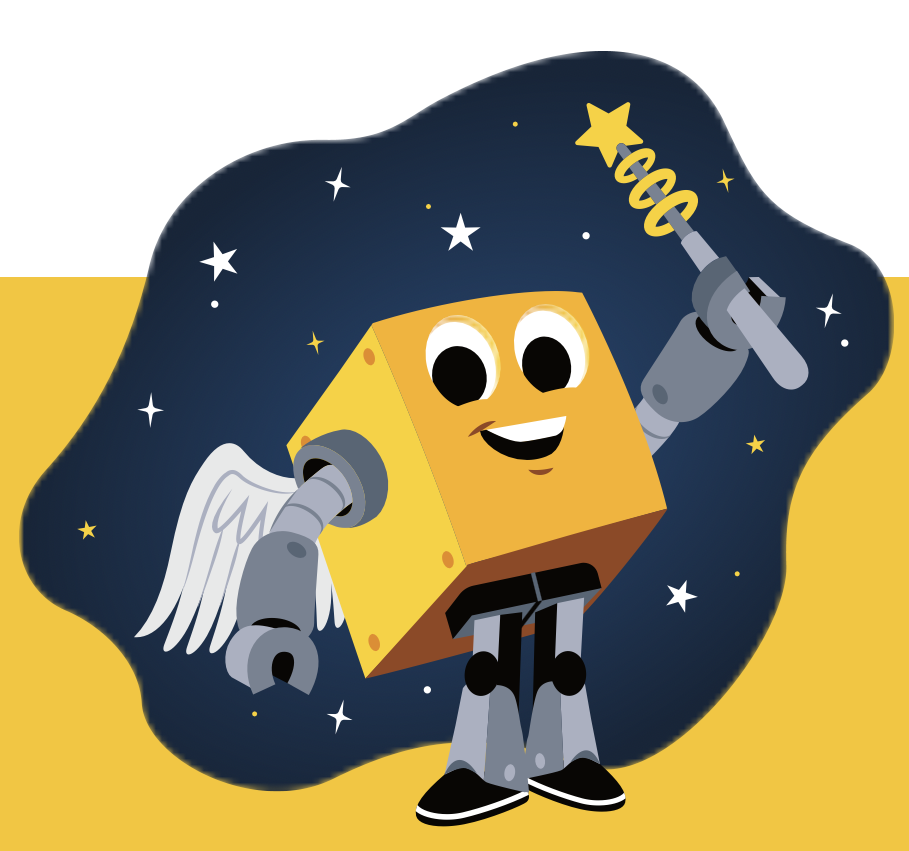

!Add slurm explanation!
In science reproducibility and accessibility are two key factors. This does not only apply during the data collection phase of a project but particularly also during its analyisis. To ensure that the same script runs the same way anywhere else we can use environments and containers. That sounds great, but what does that mean? Environments are like isolated spaces where you can install all the tools and packages that you need for a specific analysis. It’s basically like a lab bench that you set up with everything you need, chemicals, pipettes etc. for a specific experiment. Environment managers, such as Pixi, make it possible to have multiple different set ups right next to eachother, without one spilling over to the other one and even support you in finding the tools that you want. Containers on the other hand are like a bench on wheels. They contain everything tools, chemicals, hoods, chairs, the bench itself the protocol etc. They are easily shareable and the next person can just open them and run the analysis on their dataset again.
Pixi - Environment manager
- To start, install pixie:
$curl -fsSL https://pixi.sh/install.sh | sh - Create a new project directory
- Add conda-forge and bioconda channels using -c flag:
$pixi init folder_name -c conda-forge -c bioconda
-> Channels will give Pixi a source from were to install the dependencies. It’s like telling Pixi which shop to go to to buy all the tools you need.
- In your new folder you can now find a file - pixi.toml
-> .toml contains all the important information about your environment. It tells you the channels you have added, the name you have given the environment, which operating system, in which version it has been optimized for. Here we can also define different tasks and a list of all the tools/dependencies that have been installed in this environment, after they have been added.
- To add a new tool/dependency you need to be in the project’s folder. Then you can simply use the command:
$pixi add Quarto
e.g. to add Quarto-> to see if it was installed properly you can either test it with the command
$pixi run quarto --helpor go back to the .toml file and find that Quarto has been added as a dependency. - No that you have added a tool, yet another file has been added to your project folder: pixi.lock.
-> .lock tracks everything pixi actually did to install your tool, the channels, where the packages were downloaded from, licences etc.
!OBS: DON’T EVER DELETE .toml OR .lock. THIS WILL CAUSE YOUR ENVIRONMENT TO BREAK! - To use your tool you can use:
$pixi run quarto --help
Pro-Tip: You can also enter the environment using$pixi shell. This allows you to forget about pixi and just run your commands as “normally” e.g. `$quarto –help. To leave it again, just type exit into the commandline and press enter.
Container images
To ensure that your analysis are easily reproducible, indepentent of when and where they are run you can use container images. These are containers that have been created by other people. Here we are using Apptainer as a container, as it is already installed on the course server, however Docker was also recommended. Two common platforms to download container images from are Dockerhub and Seqera.
- Dockerhub provides the first tool that we want to install: VCFtool, a software created for manipulation and quering of VCF files. It’s like a Swiss Army knife for VCF files - filter, summerize, analyze qenetic/sequencing data. To install it use:
$apptainer pull vcftools_0.1.16-1.sif docker://biocontainers/vcftools:v0.1.16-1-deb_cv1-> apptainer is the software that is called, pull is the command to download/fetch something. “vcftools_0.1.16.1.sif” is the name of the container image. docker:// is te dockerhub registry that we are pulling our software from. “biocontainers/vcftools…” is the user profile that created the container and the name of the container you want to use.
- Another platform for container images is Seqera. This platform is a little different from dockerhub since it does not provide container images that have been uploaded by other users but rather they build them as you request them, by using bioconda, conda-forge and pypi. Thus, the software that you want to use has to be present in one of those reposetories. Change the Container settings on their website from Docker to Singularity and search for bioconda::vcftools=0.1.17.
- Click on get Container, then copy paste the text from the website to the your system:
$apptainer pull fastqc:0.12.1.sif oras://community.wave.seqera.io/library/vcftools:0.1.17--b541aa8d9f9213f9oras is used, as this is the registry that is being pulled from in this case
Here, we are pulling from the oras registry rather then docker which is why we use oras:// isntead. - To run use:
$apptainer exec fastqc:0.12.1.sif vcftools --version